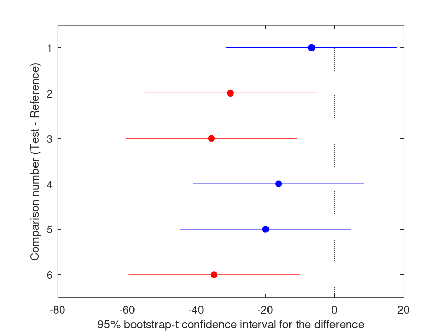
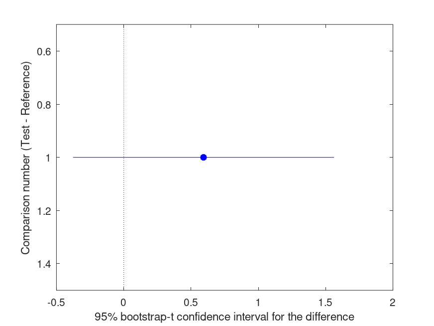
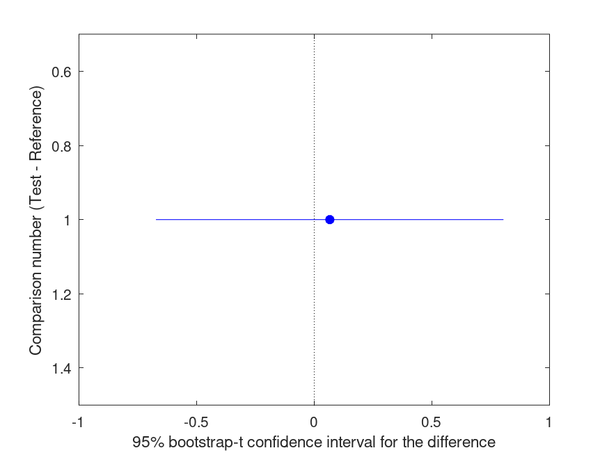

boot1way
Performs resampling under the null hypothesis and computes p-values for
(multiple) comparisons among independent samples in a one-way layout.
-- Function File: boot1way (DATA, GROUP)5
-- Function File: boot1way (..., NAME, VALUE)
-- Function File: boot1way (..., 'bootfun', BOOTFUN)
-- Function File: boot1way (..., 'nboot', NBOOT)
-- Function File: boot1way (..., 'ref', REF)
-- Function File: boot1way (..., 'alpha', ALPHA)
-- Function File: boot1way (..., 'Options', PAROPT)
-- Function File: PVAL = boot1way (DATA, GROUP, ...)
-- Function File: [PVAL, C] = boot1way (DATA, GROUP, ...)
-- Function File: [PVAL, C, STATS] = boot1way (DATA, GROUP, ...)
-- Function File: [...] = boot1way (..., 'display', DISPLAYOPT)
'boot1way (DATA, GROUP)' performs a bootstrap version of a randomization
test [1] for comparing independent samples of data in a one-way layout.
Pairwise multiple comparison tests are computed by the single-step
maximum absolute t-statistic (maxT) procedure, which controls the family-
wise error rate (FWER) in a manner analagous to the Tukey-Kramer Honest
Significance Difference test. The results are displayed as a pretty table
and the differences between groups are plotted along with the symmetric
95% bootstrap-t confidence intervals (CI). The colours of the markers and
error bars depend on the value of the multiplicity-adjusted p-values:
red if p < .05, or blue if p > .05. All of the p-values reported represent
the outcome of two-tailed tests. DATA must be a numeric column vector or
matrix, where categorization of the DATA rows is achieved by labels in
GROUP. GROUP must be a vector or cell array with the same number of
rows as DATA.
boot1way can take a number of optional parameters as NAME-VALUE pairs:
'boot1way (..., 'bootfun', BOOTFUN)' also specifies BOOTFUN: the function
calculated on the original sample and the bootstrap resamples. BOOTFUN
must be either a:
o function handle or anonymous function,
o string of function name, or
o a cell array where the first cell is one of the above function
definitions and the remaining cells are (additional) input arguments
to that function (other than the data arguments).
In all cases, BOOTFUN must take DATA for the initial input argument(s).
BOOTFUN must calculate a statistic representative of the finite data
sample; it should NOT be an estimate of a population parameter (unless
they are one of the same). By default, BOOTFUN is @mean. If a robust
alternative to the mean is required, set BOOTFUN to 'robust' to
implement a smoothed version of the median (a.k.a. @smoothmedian).
'boot1way (..., 'nboot', NBOOT)' is a scalar or a vector of upto two
positive integers indicating the number of resamples for the first
(bootstrap) and second (bootknife) levels of iterated resampling. If NBOOT
is a scalar value, or if NBOOT(2) is set to 0, then standard errors are
calculated either without resampling (if BOOTFUN @mean) or using Tukey's
jackknife. This implementation of jackknife requires the Statistics
package/toolbox. The default value of NBOOT is the vector: [999,99].
'boot1way (..., 'ref', REF)' sets the GROUP to use as the reference group
for the multiple comparison tests. If REF is a recognised member of GROUP,
then the maxT procedure for treatment versus reference controls the
family-wise error rate (FWER) in a manner analagous to Dunnett's multiple
comparison tests.
'boot1way (..., 'alpha', ALPHA)' specifies the two-tailed significance
level for CI coverage. The default value of ALPHA is 0.05 for 95%
confidence intervals.
'boot1way (..., 'Options', PAROPT)' specifies options that govern if
and how to perform bootstrap iterations using multiple processors (if the
Parallel Computing Toolbox or Octave Parallel package is available). This
argument is a structure with the following recognised fields:
o 'UseParallel': If true, use parallel processes to accelerate
bootstrap computations on multicore machines,
specifically non-vectorized function evaluations,
double bootstrap resampling and jackknife function
evaluations. Default is false for serial computation.
In MATLAB, the default is true if a parallel pool
has already been started.
o 'nproc': nproc sets the number of parallel processes
'PVAL = boot1way (DATA, GROUP, ...)' returns the p-value(s) for the
(multiple) two-tailed test(s). Note that the p-value(s) returned are
already adjusted to control the family-wise, type I error rate and
truncated at the resolution limit determined by the number of bootstrap
replicates, specifically 1/NBOOT(1)
'[PVAL, C] = boot1way (DATA, GROUP, ...)' also returns a 9 column matrix
that summarises multiple comparison test results. The columns of C are:
- column 1: test GROUP number
- column 2: reference GROUP number
- column 3: value of BOOTFUN evaluated for the test GROUP
- column 4: value of BOOTFUN evaluated for the reference GROUP
- column 5: the difference between the groups (column 3 minus column 4)
- column 6: LOWER bound of the 100*(1-ALPHA)% bootstrap-t CI
- column 7: UPPER bound of the 100*(1-ALPHA)% bootstrap-t CI
- column 8: t-ratio
- column 9: multiplicity-adjusted p-value
- column 10: minimum false positive risk for the p-value
'[PVAL, C, STATS] = boot1way (DATA, GROUP, ...)' also returns a structure
containing additional statistics. The stats structure contains the
following fields:
gnames - group names used in the GROUP input argument. The index of
gnames corresponds to the numbers used to identify GROUPs
in columns 1 and 2 of the output argument C
ref - index of the reference group
groups - group index and BOOTFUN for each group with sample size,
standard error and CI, which start to overlap at a
multiplicity-adjusted p-value of approximately 0.05
Var - weighted mean (pooled) sampling variance
nboot - number of bootstrap resamples (1st and 2nd resampling layers)
alpha - two-tailed significance level for the CI reported in C.
'[PVAL, C, STATS, BOOTSTAT] = boot1way (DATA, GROUP, ...)' also returns
the maximum test statistic computed for each bootstrap resample
'[...] = boot1way (..., 'display', DISPLAYOPT)' a logical value (true
or false) used to specify whether to display the results and plot the
graph in addition to creating the output arguments. The default is true.
BIBLIOGRAPHY:
[1] Efron, and Tibshirani (1993) An Introduction to the Bootstrap.
New York, NY: Chapman & Hall
boot1way (version 2023.10.04)
Bootstrap tests for comparing independent groups in a one-way layout
Author: Andrew Charles Penn
https://www.researchgate.net/profile/Andrew_Penn/
Copyright 2019 Andrew Charles Penn
This program is free software: you can redistribute it and/or modify
it under the terms of the GNU General Public License as published by
the Free Software Foundation, either version 3 of the License, or
(at your option) any later version.
This program is distributed in the hope that it will be useful,
but WITHOUT ANY WARRANTY; without even the implied warranty of
MERCHANTABILITY or FITNESS FOR A PARTICULAR PURPOSE. See the
GNU General Public License for more details.
You should have received a copy of the GNU General Public License
along with this program. If not, see http://www.gnu.org/licenses/
Demonstration 1
The following code
% COMPARISON OF TWO INDEPENDENT GROUPS WITH UNEQUAL SAMPLE SIZES
% (analagous to Student's t-test)
y = [54 43
23 34
45 65
54 77
45 46
NaN 65];
g = {'male' 'female'
'male' 'female'
'male' 'female'
'male' 'female'
'male' 'female'
'male' 'female'};
boot1way (y(:), g(:), 'ref', 'male', 'nboot', 4999);
% Please be patient, the calculations will be completed soon...
Produces the following output
Summary of bootstrap multiple comparison tests in a one-way layout ***************************************************************************** Bootstrap settings: Function: mean Bootstrap resampling method: Balanced, bootstrap resampling Number of bootstrap resamples: 4999 Method for estimating standard errors: Calculated without resampling Multiple comparison method: Single-step maxT procedure based on Dunnett Reference group used for comparisons: 2 (male) ----------------------------------------------------------------------------- | Comparison | Test # | Ref # | Difference | t | p | |------------|------------|------------|------------|------------|----------| | 1 | 1 | 2 | +10.80 | +1.20 | .255 | ----------------------------------------------------------------------------- | GROUP # | GROUP label | N | |------------|---------------------------------------------------|----------| | 1 | female | 6 | | 2 | male | 5 |
and the following figure
| Figure 1 |
|---|
 |
Demonstration 2
The following code
% COMPARISON OF TWO INDEPENDENT GROUPS WITH UNEQUAL SAMPLE SIZES
% (a robust version of Student's t-test)
y = [54 43
23 34
45 65
54 77
45 46
NaN 65];
g = {'male' 'female'
'male' 'female'
'male' 'female'
'male' 'female'
'male' 'female'
'male' 'female'};
boot1way (y(:), g(:), 'ref', 'male', 'nboot', 4999, 'bootfun', 'robust');
% Please be patient, the calculations will be completed soon...
Produces the following output
Summary of bootstrap multiple comparison tests in a one-way layout ***************************************************************************** Bootstrap settings: Function: robust Bootstrap resampling method: Balanced, bootstrap resampling Number of bootstrap resamples: 4999 Method for estimating standard errors: Leave-one-out jackknife Multiple comparison method: Single-step maxT procedure based on Dunnett Reference group used for comparisons: 2 (male) ----------------------------------------------------------------------------- | Comparison | Test # | Ref # | Difference | t | p | |------------|------------|------------|------------|------------|----------| | 1 | 1 | 2 | +8.721 | +0.77 | .438 | ----------------------------------------------------------------------------- | GROUP # | GROUP label | N | |------------|---------------------------------------------------|----------| | 1 | female | 6 | | 2 | male | 5 |
and the following figure
| Figure 1 |
|---|
Demonstration 3
The following code
% ONE-WAY ANOVA WITH EQUAL SAMPLE SIZES: Treatment vs. Control (1)
y = [111.39 110.21 89.21 76.64 95.35 90.97 62.78;
112.93 60.36 92.29 59.54 98.93 97.03 79.65;
85.24 109.63 64.93 75.69 95.28 57.41 75.83;
111.96 103.40 75.49 76.69 77.95 93.32 78.70];
g = [1 2 3 4 5 6 7;
1 2 3 4 5 6 7;
1 2 3 4 5 6 7;
1 2 3 4 5 6 7];
boot1way (y(:),g(:),'ref',1,'nboot',4999);
% Please be patient, the calculations will be completed soon...
Produces the following output
Summary of bootstrap multiple comparison tests in a one-way layout ***************************************************************************** Bootstrap settings: Function: mean Bootstrap resampling method: Balanced, bootstrap resampling Number of bootstrap resamples: 4999 Method for estimating standard errors: Calculated without resampling Multiple comparison method: Single-step maxT procedure based on Dunnett Reference group used for comparisons: 1 (1) ----------------------------------------------------------------------------- | Comparison | Test # | Ref # | Difference | t | p | |------------|------------|------------|------------|------------|----------| | 1 | 2 | 1 | -9.480 | -0.93 | .859 | | 2 | 3 | 1 | -24.90 | -2.43 | .098 | | 3 | 4 | 1 | -33.24 | -3.24 | .018 |* | 4 | 5 | 1 | -13.50 | -1.32 | .603 | | 5 | 6 | 1 | -20.70 | -2.02 | .205 | | 6 | 7 | 1 | -31.14 | -3.04 | .028 |* ----------------------------------------------------------------------------- | GROUP # | GROUP label | N | |------------|---------------------------------------------------|----------| | 1 | 1 | 4 | | 2 | 2 | 4 | | 3 | 3 | 4 | | 4 | 4 | 4 | | 5 | 5 | 4 | | 6 | 6 | 4 | | 7 | 7 | 4 |
and the following figure
| Figure 1 |
|---|
Demonstration 4
The following code
% ROBUST ONE-WAY ANOVA WITH EQUAL SAMPLE SIZES: Treatment vs. Control (1)
y = [111.39 110.21 89.21 76.64 95.35 90.97 62.78;
112.93 60.36 92.29 59.54 98.93 97.03 79.65;
85.24 109.63 64.93 75.69 95.28 57.41 75.83;
111.96 103.40 75.49 76.69 77.95 93.32 78.70];
g = [1 2 3 4 5 6 7;
1 2 3 4 5 6 7;
1 2 3 4 5 6 7;
1 2 3 4 5 6 7];
boot1way (y(:), g(:), 'ref', 1, 'nboot', 4999, 'bootfun', 'robust');
% Please be patient, the calculations will be completed soon...
Produces the following output
Summary of bootstrap multiple comparison tests in a one-way layout ***************************************************************************** Bootstrap settings: Function: robust Bootstrap resampling method: Balanced, bootstrap resampling Number of bootstrap resamples: 4999 Method for estimating standard errors: Leave-one-out jackknife Multiple comparison method: Single-step maxT procedure based on Dunnett Reference group used for comparisons: 1 (1) ----------------------------------------------------------------------------- | Comparison | Test # | Ref # | Difference | t | p | |------------|------------|------------|------------|------------|----------| | 1 | 2 | 1 | -6.664 | -0.82 | .909 | | 2 | 3 | 1 | -30.18 | -3.73 | .018 |* | 3 | 4 | 1 | -35.63 | -4.40 | .006 |** | 4 | 5 | 1 | -16.21 | -2.00 | .275 | | 5 | 6 | 1 | -19.95 | -2.46 | .132 | | 6 | 7 | 1 | -34.86 | -4.30 | .006 |** ----------------------------------------------------------------------------- | GROUP # | GROUP label | N | |------------|---------------------------------------------------|----------| | 1 | 1 | 4 | | 2 | 2 | 4 | | 3 | 3 | 4 | | 4 | 4 | 4 | | 5 | 5 | 4 | | 6 | 6 | 4 | | 7 | 7 | 4 |
and the following figure
| Figure 1 |
|---|
|  |
Demonstration 5
The following code
% ONE-WAY ANOVA WITH UNEQUAL SAMPLE SIZES: pairwise comparisons
y = [54 87 45
23 98 39
45 64 51
54 77 49
45 89 50
47 NaN 55];
g = [ 1 2 3
1 2 3
1 2 3
1 2 3
1 2 3
1 2 3];
boot1way (y(:), g(:), 'nboot', 4999);
% Please be patient, the calculations will be completed soon...
Produces the following output
Summary of bootstrap multiple comparison tests in a one-way layout ***************************************************************************** Bootstrap settings: Function: mean Bootstrap resampling method: Balanced, bootstrap resampling Number of bootstrap resamples: 4999 Method for estimating standard errors: Calculated without resampling Multiple comparison method: Single-step maxT procedure based on Tukey-Kramer ----------------------------------------------------------------------------- | Comparison | Test # | Ref # | Difference | t | p | |------------|------------|------------|------------|------------|----------| | 1 | 2 | 1 | +38.33 | +6.17 | <.001 |*** | 2 | 3 | 1 | +3.500 | +0.59 | .825 | | 3 | 3 | 2 | -34.83 | -5.60 | 1.000 | ----------------------------------------------------------------------------- | GROUP # | GROUP label | N | |------------|---------------------------------------------------|----------| | 1 | 1 | 6 | | 2 | 2 | 5 | | 3 | 3 | 6 |
and the following figure
| Figure 1 |
|---|
Demonstration 6
The following code
% COMPARE STANDARD DEVIATIONS BETWEEN 3 GROUPS: pairwise comparisons
y = [54 87 45
23 98 39
45 64 51
54 77 49
45 89 50
47 NaN 55];
g = [ 1 2 3
1 2 3
1 2 3
1 2 3
1 2 3
1 2 3];
p = boot1way (y(:),g(:),'bootfun',{@std,1});
Produces the following output
Summary of bootstrap multiple comparison tests in a one-way layout ***************************************************************************** Bootstrap settings: Function: std Bootstrap resampling method: Balanced, bootstrap resampling Number of bootstrap resamples: 999 Method for estimating standard errors: Balanced, bootknife resampling Number of bootknife resamples used to estimate standard errors: 99 Multiple comparison method: Single-step maxT procedure based on Tukey-Kramer ----------------------------------------------------------------------------- | Comparison | Test # | Ref # | Difference | t | p | |------------|------------|------------|------------|------------|----------| | 1 | 2 | 1 | +1.207 | +0.26 | .965 | | 2 | 3 | 1 | -5.356 | -1.20 | .502 | | 3 | 3 | 2 | -6.563 | -1.40 | .427 | ----------------------------------------------------------------------------- | GROUP # | GROUP label | N | |------------|---------------------------------------------------|----------| | 1 | 1 | 6 | | 2 | 2 | 5 | | 3 | 3 | 6 |
and the following figure
| Figure 1 |
|---|
Demonstration 7
The following code
% COMPARE CORRELATION COEFFICIENTS BETWEEN 2 DATA SETS Y = randn (20, 2); g = [zeros(10, 1); ones(10, 1)]; func = @(M) cor (M(:,1), M(:,2)); boot1way (Y, g, 'bootfun', func); % Please be patient, the calculations will be completed soon...
Produces the following output
Summary of bootstrap multiple comparison tests in a one-way layout ***************************************************************************** Bootstrap settings: Function: @(M) cor (M (:, 1), M (:, 2)) Bootstrap resampling method: Balanced, bootstrap resampling Number of bootstrap resamples: 999 Method for estimating standard errors: Balanced, bootknife resampling Number of bootknife resamples used to estimate standard errors: 99 Multiple comparison method: Single-step maxT procedure based on Tukey-Kramer ----------------------------------------------------------------------------- | Comparison | Test # | Ref # | Difference | t | p | |------------|------------|------------|------------|------------|----------| | 1 | 2 | 1 | +0.1148 | +0.19 | .844 | ----------------------------------------------------------------------------- | GROUP # | GROUP label | N | |------------|---------------------------------------------------|----------| | 1 | 0 | 10 | | 2 | 1 | 10 |
and the following figure
| Figure 1 |
|---|
|  |
Demonstration 8
The following code
% COMPARE SLOPES FROM LINEAR REGRESSION ON 2 DATA SETS
y = randn (20, 1); x = randn (20, 1); X = [ones(20, 1), x];
g = [zeros(10, 1); ones(10, 1)];
func = @(M) subsref (M(:,2:end) \ M(:,1), ...
struct ('type', '()', 'subs', {{2}}));
boot1way ([y, X], g, 'bootfun', func);
% Please be patient, the calculations will be completed soon...
Produces the following output
Summary of bootstrap multiple comparison tests in a one-way layout
*****************************************************************************
Bootstrap settings:
Function: @(M) subsref (M (:, 2:end) \ M (:, 1), struct ('type', '()', 'subs', {{2}}))
Bootstrap resampling method: Balanced, bootstrap resampling
Number of bootstrap resamples: 999
Method for estimating standard errors: Balanced, bootknife resampling
Number of bootknife resamples used to estimate standard errors: 99
Multiple comparison method: Single-step maxT procedure based on Tukey-Kramer
-----------------------------------------------------------------------------
| Comparison | Test # | Ref # | Difference | t | p |
|------------|------------|------------|------------|------------|----------|
| 1 | 2 | 1 | -0.5577 | -0.57 | .465 |
-----------------------------------------------------------------------------
| GROUP # | GROUP label | N |
|------------|---------------------------------------------------|----------|
| 1 | 0 | 10 |
| 2 | 1 | 10 |
and the following figure
| Figure 1 |
|---|
|  |
Package: statistics-resampling